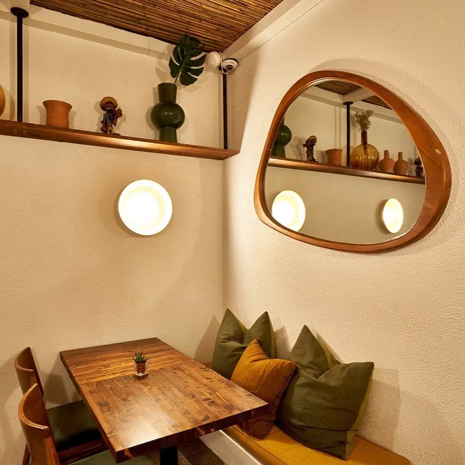
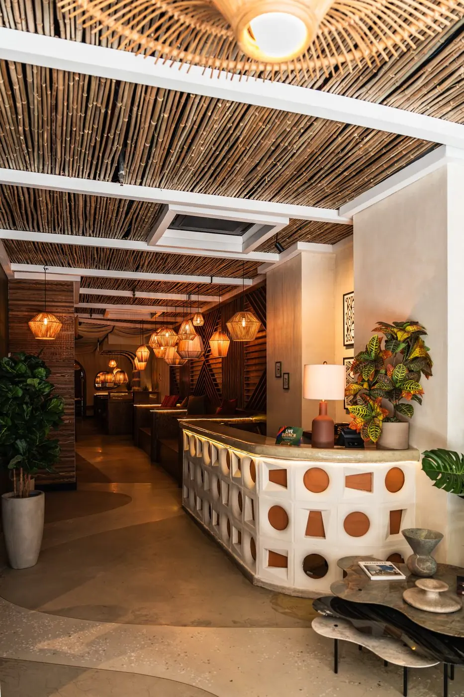
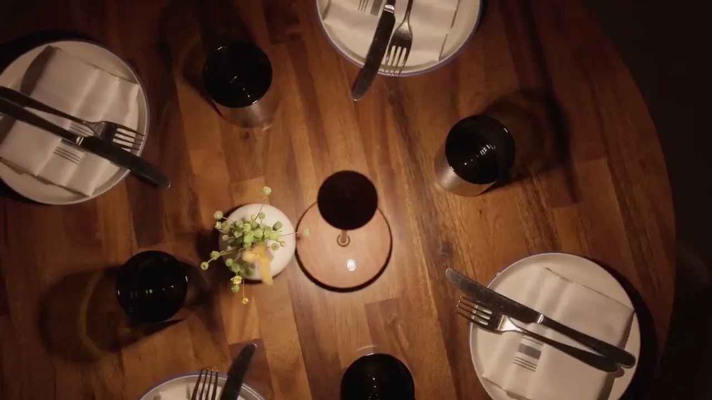

The Brazilian Table is more than a place to eat, it's a cultural space we share. It's where stories unfold, bonds grow stronger, and time slows down. Around the table, flavors become feelings, moments become memories, and every dish invites you to stay a little longer.



A2 · Anatomy of a berimbau
01/04
The bowVerga
A length of wood, bent under tension so that everything else can hang from it. The kitchen plays that part here: São Paulo-born chef Victor Vasconcelos, who trained alongside Laurent Suaudeau, bends refined technique around traditional Brazilian cooking.
One wire, one voice, nowhere to hide. A caipirinha works the same way: few ingredients, all of them audible. Which is why NYC's first Caipirinha Bar is built around exactly that drink.
A hollow gourd is what turns a thin wire into a voice that carries across a room. Above 36th Street, the Second Floor does that job: a listening bar with live music and DJ sets.
A small woven basket shaken in the playing hand. It adds nothing to the melody and everything to the mood. Weddings, launches, birthdays, buyouts: it's the part of the instrument that says this is a party.